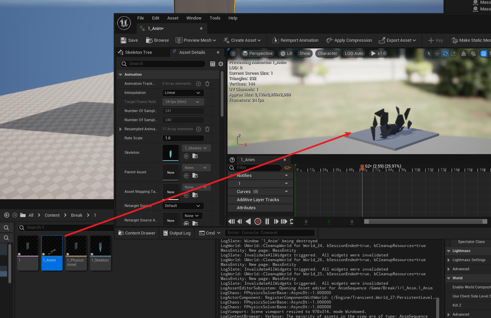
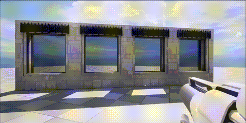

#Blog
UE 破碎方案
破碎效果是游戏中的常见效果，但由于较多复杂的物理计算，通常游戏中都会做离线预先bake的方法来实现破碎，像彩虹六号，Control 这种以破碎为核心体验的游戏，则有专业引擎团队进行大量的物理优化后实现。本文尝试总结了已有一些破碎实现方案，并参考黑客帝国demo后设计的一个半实时模拟的破碎效果，实现实时模拟破碎。
先介绍下已有的方案：（此处参考：https://zhuanlan.zhihu.com/p/608906269）
已有方案
骨骼动画
houdini中用Voronoi fracture制作破碎后通过rbd bullet solver结算动画数据导出为fbx，并在引擎中作骨骼动画播放

顶点动画
houdini中用Voronoi fracture制作破碎后通过filecache节点，Labs vertex animation textures生成vat数据，在houdini中讲VAT材质function迁移到项目中使用。


并将position 和 rotation 两张贴图导入后设置相关材质后，查看破碎效果。
Alembic
使用ROP Alembic Output 将破碎动画导出为abc格式（数据量大）
导入到引擎中，变成几何体缓存，并通过sequence进行播放
chaos
UE5自带破碎系统
前置方案对比
| 破碎方案 | 优点 | 缺点 |
|---|---|---|
| 骨骼动画 | 骨骼支持二次修改效果可控 | 碎块越多骨骼数量越多性能消耗越大 |
| 顶点动画 | 基于顶点着色器性能消耗最小 | 贴图的大小约束了动画数据量的上限 |
| alembic | 精度高，兼容性强 | 体积大 |
| Chaos | 碎块与环境的碰撞 | 碰撞计算量大性能消耗大 |
可以看到前置方案基本都是预先计算好破碎，并在相应情况下播放相应动画。其中骨骼动画、顶点动画、alembic方案均为离线破碎，无法做好很好的交互效果。chaos虽然是实时物理计算的破碎，但存在消耗计算量大，性能消耗高的问题。
考虑到场景中可能有大量实时玻璃破碎，参考了其他方案后，可以发现：在顶点动画中，可以使用顶点偏移的方式实现mesh的位移，而由compute shader并行计算的Niagara有不少节点可以实现物理模拟，所以可以尝试将Niagara模拟的信息传递到材质的顶点偏移中，实现实时破碎模拟。
Niagara + WorldPositionOffset 实时模拟
技术剖析
破碎部分任然使用预处理的方法提前将碎块碎号，避免Gameplay中大量的实时计算。这个破碎我使用houdini先做默认破碎，并导出pivot painter图到UE引擎。
在Niagara中，我使用pivot painter图的采样，将生成的粒子放置到每个碎片处。然后通过Niagara中的物理模拟，将粒子的物理模拟位置，旋转等信息bake到Pivot painter图上，并传递给Material 做 world position offset 的偏移。
前期处理
houdini处理思路流程图
- 导入模型（box位置）
- 通过scatter散点，并通过attributewrangle 设置散点的root。
- 通过rbd material fracture 对模型根据输入的散点进行破碎。
- 对每个碎片进行单独设置root命名设置。
- 根据每个片的内外设置顶点色（内切缝处顶点色设置为1）。

- 通过houdini自带的pivotpainter工具导出即可。
引擎处理
将处理后的mesh和原mesh及生成的3张PP2贴图导入引擎
Niagara 处理

采样贴图
Initialize Component Variables ： 采样PP2贴图生成粒子信息及scale
Calculate Per Particle Render Target UV Location：根据每个粒子的index信息找到其在PivotPainter2贴图中的UV位置，方便下一步读取。
Initialize Component Variables：根据上一步的UV信息读取PP2贴图，并将粒子位置、朝向等设置到对应的世界空间位置，朝向等。（其中读取使用了ms_PivotPainter2_DecodePostion_NF函数）

Calculate Mass and Rotational Inertia by Volume ： 根据scale设置碎片的mass
设置物理模拟

写回材质
- Control PP2 Mesh Elements Via Niagara： 通过Niagara将粒子位置信息烘焙回Texture，内部通过将位置差、旋转信息组合成LinearColor后，根据Calculate Per Particle Render Target UV Location计算到的UV信息，将颜色写入到前者的UV上。
- 并在niagara材质输出部分将相关的RT和参数传递给mesh的material。

Material 解析
WPO解析

材质核心部分在SkinPivotPainter2MeshesViaNiagaraWAccurateVelocity，里面做了pingpong 采样贴图，更好优化卡顿效果。

通过实时计算出来的PP2 采样将位置信息从世界空间转换为MeshParticle空间，与原来的PP2位置计算差值后转到世界空间得到实时的偏移。

加上原来初始偏移在旋转后的位移差与绝对世界位置（包含WPO）相加，最终减掉实时PP2采样的位置，得到实时PP2的位移，乘上缩放量后再叠加原来的偏移即可达到效果.


其他项解析

直接采样模型顶点色做其他项的lerp实现破碎效果。

最终实现效果：
可以控制玻璃破碎方向及破碎力度等。

总结
| 破碎方案 | 优点 | 缺点 |
|---|---|---|
| 骨骼动画 | 骨骼支持二次修改效果可控 | 碎块越多骨骼数量越多性能消耗越大 |
| 顶点动画 | 基于顶点着色器性能消耗最小 | 贴图的大小约束了动画数据量的上限 |
| alembic | 精度高，兼容性强 | 体积大 |
| Chaos | 碎块与环境的碰撞 | 碰撞计算量大性能消耗大 |
| Niagara+PP2 实时 | 碎块和粒子近似模拟，效率高 | 贴图较多，需要较好项目管理 |
3A游戏制作破碎参考
Control
https://www.youtube.com/watch?v=kODJsQGXanU
https://www.gdcvault.com/play/1026820/Destructible-Environments-in-Control-Lessons
RainBow 6
https://www.gdcvault.com/play/1023003/The-Art-of-Destruction-in
https://www.gdcvault.com/play/1022990/Rendering-Rainbow-Six-Siege
fortnites
https://www.gdcvault.com/play/1018192/The-Inner-Workings-of-Fortnite
Uncharted 4: A Thief’s End
https://www.sidefx.com/community/fx-adventures-in-uncharted-4-a-thiefs-end/